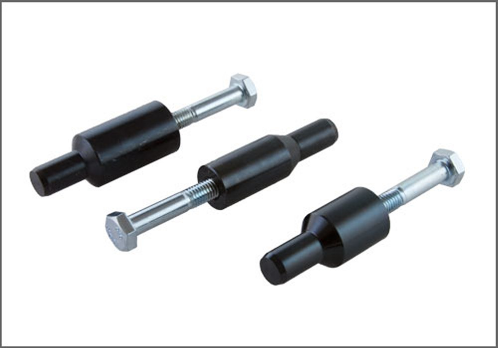

Clutch Disc: Tools and Equipment
BMW Clutch Centering Tool Set
AST tool# BMW 6240

3-Piece Set. For centering clutch disc on flywheel while installing self-adjusting clutch (SAC).
Applicable to the following transmissions:
S5D 200G, S5D 250G, S5D 260Z, S5D 310Z, S6S 420G, S6S 560G, GS6-37BZ and GS6-37DZ (H-Transmissions)
- Made in the USA
Contact AST for pricing.
Assenmacher Specialty Tools
1-800-525-2943